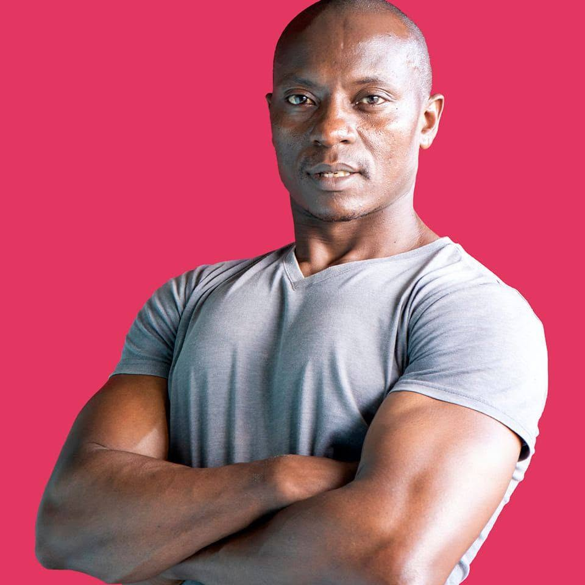

Clarity
You will understand what you are doing, why it matters, and how to progress.
Personal training in Nairobi for people who want a stronger body, a clearer mind, and a standard they can keep.
 Lucas · KAG Olympic Gym Center
Lucas · KAG Olympic Gym Center
Lucas became a trainer because the right guidance changes more than a body. It changes what people believe they are capable of. The work is structured, but the outcome is deeply human: more energy, more confidence, more ownership.
You will understand what you are doing, why it matters, and how to progress.
Your starting point is never a weakness. It is information we use to build well.
The best program is one that fits your life well enough to keep showing up.
Professional coaching began with disciplined fundamentals and a belief in accessible fitness.
Weight loss and body recomposition coaching became a core part of the practice.
Strength, conditioning, and athlete development expanded the coaching method.
Helping Nairobi clients build stronger lives, one purposeful session at a time.
Lucas combines certification, coaching experience, and a commitment to continued learning across strength, functional fitness, nutrition, and sports performance.

KAG Olympic Gym Center is where focused coaching meets a community that wants to move forward.Olympic, Kibera · Nairobi, Kenya
A first consultation is a conversation about fit, goals, and the best next step.
No. Beginners are welcome and every movement is taught at the right level.
Most clients begin with two or three purposeful sessions each week.
Yes. Guidance is practical, goal-led, and built around habits you can maintain.
Ready to build a stronger relationship with your body?